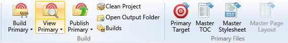
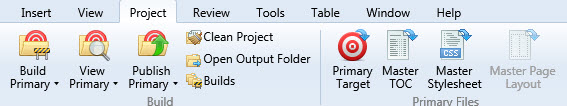

Creating good screenshots
We all take pictures of our screen from time to time because it is often the fastest way to show and explain something. Screenshots are essential for almost any documentation as they can be of great help for users providing quick visual solution. Nobody wants to write or read a lot of text. Why spend so much time describing a process that can fit in a couple of screenshots?
You have to think about many things when making screenshots, such as image size, image quality, information privacy, text readability, and more.
Ground rules
Figure out precisely what you are doing the screenshots for. This will allow you to capture just the details you need. Ensure that no necessary UI element gets left outside the frame. Remember, a user should understand where the element in question is located in the UI to be able to find it. On this screenshot, it's impossible to understand what tab is opened without going through some explanatory text.

Instead, put it in context. You can see the commands, but where is it? As you see below, the user can see it is part of the Project group.

Thinking through helps a lot, especially when doing a series of screenshots to depict some steps. A mistake at the very beginning can ruin the flow for a user. Think before starting. Create the environment thoroughly before taking any action, be mindful of any pitfalls, and give the users a heads-up when necessary.